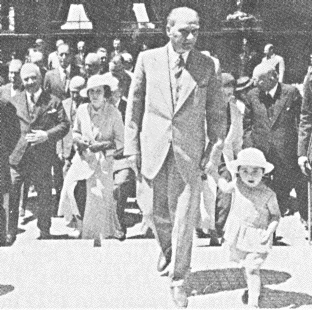
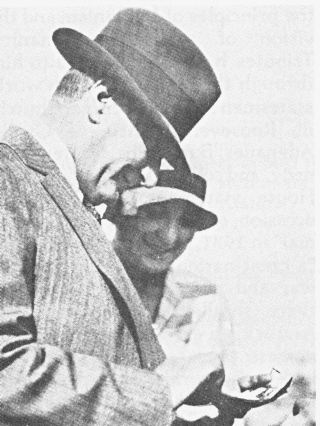
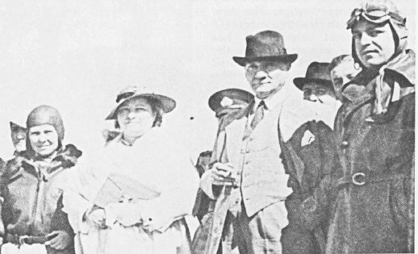
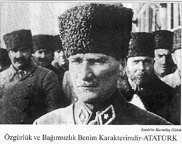
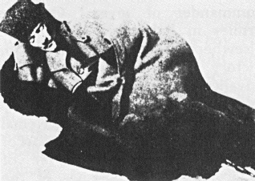

Homepage
Military career
Domestic policies
Foreign policies
Economic policies
Personal life
Illness and death
Legacy
Awards and decorations
Media
Why I chose Ataturk
Websites about Ataturk
About me
Images and Videos about Ataturk
Portrait
With Turkish people



On a trip

Soldier

Education
Parliament
Kurtuluş Otağı,2018
TRT World,2017
AFP agency,2016